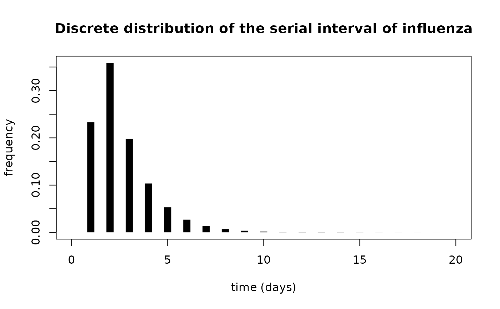

R/discr_si.R
discr_si.Rddiscr_si computes the discrete distribution of the serial interval,
assuming that the serial interval is shifted Gamma distributed, with shift 1.
discr_si(k, mu, sigma)
| k | Positive integer, or vector of positive integers for which the discrete distribution is desired. |
|---|---|
| mu | A positive real giving the mean of the Gamma distribution. |
| sigma | A non-negative real giving the standard deviation of the Gamma distribution. |
Gives the discrete probability \(w_k\) that the serial interval is equal to \(k\).
Assuming that the serial interval is shifted Gamma distributed with mean \(\mu\), standard deviation \(\sigma\) and shift \(1\), the discrete probability \(w_k\) that the serial interval is equal to \(k\) is:$$w_k = kF_{\{\mu-1,\sigma\}}(k)+(k-2)F_{\{\mu-1,\sigma\}} (k-2)-2(k-1)F_{\{\mu-1,\sigma\}}(k-1)\\ +(\mu-1)(2F_{\{\mu-1+\frac{\sigma^2}{\mu-1}, \sigma\sqrt{1+\frac{\sigma^2}{\mu-1}}\}}(k-1)- F_{\{\mu-1+\frac{\sigma^2}{\mu-1}, \sigma\sqrt{1+\frac{\sigma^2}{\mu-1}}\}}(k-2)- F_{\{\mu-1+\frac{\sigma^2}{\mu-1}, \sigma\sqrt{1+\frac{\sigma^2}{\mu-1}}\}}(k))$$where \(F_{\{\mu,\sigma\}}\) is the cumulative density function of a Gamma distribution with mean \(\mu\) and standard deviation \(\sigma\).
Cori, A. et al. A new framework and software to estimate time-varying reproduction numbers during epidemics (AJE 2013).
Anne Cori a.cori@imperial.ac.uk
## Computing the discrete serial interval of influenza mean_flu_si <- 2.6 sd_flu_si <- 1.5 dicrete_si_distr <- discr_si(seq(0, 20), mean_flu_si, sd_flu_si) plot(seq(0, 20), dicrete_si_distr, type = "h", lwd = 10, lend = 1, xlab = "time (days)", ylab = "frequency")